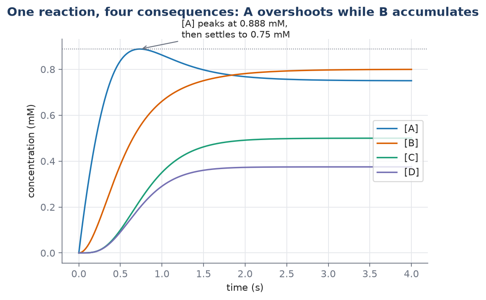

L03 — Reaction Networks and Mass Action
Practicals: 
02_mass_action · 
02_simple_networks
TKBM262615, Lecture 3. Draws on reaction network, law of mass action, writing odes from a reaction network, exponential decay, time constant, equilibrium constant, and conservation relation. Source: Ingalls Ch. 2 §2.1–2.1.3.
By the end of this lecture you should be able to:
- Draw the interaction graph for a list of reactions, and say whether the network is open or closed.
- Write the ODE system for a small reaction network by inspection: one equation per species, one rate per reaction, correct stoichiometric factors.
- Give the units of any rate constant, and read a reaction’s kinetic order off those units.
- State one condition under which mass action is the wrong rate law, and find a network’s conservation relation by inspection and by computing a nullspace.
Retrieval: what L02 left you holding
From memory, no notes:
- What are the units of \(\frac{d[A]}{dt}\) if \([A]\) is in mM and \(t\) is in seconds — and what does the number mean physically?
- Is a quantity’s status as a state variable or a parameter a fact about the quantity, or a modelling choice? What does it depend on?
- Why is \(k[A][B]\) nonlinear, using the two-part test?
The hook: an equation you’ve already run twice
You have simulated this model twice now, once in L01 and once in L02, with solve_ivp:
\[\frac{d[A]}{dt} = k_0 - k_1[A]\]
Both times, it was handed to you. Where did it come from? Today’s answer: a picture — two arrows, a species being made and a species being consumed — put through a four-step recipe that turns any list of chemical reactions into exactly this kind of equation.
Practicals: notebooks/02_mass_action.ipynb simulates \(A \rightleftharpoons B\) and dimerisation \(2R \rightleftharpoons R_2\) with the factor-of-2 bookkeeping and the \([R]+2[R_2]\) conservation check; notebooks/02_simple_networks.ipynb works the four simple networks of Ingalls §2.1.3.
Reaction networks: a set of arrows, treated as one system
What a network is
Ingalls’ running example is three reactions, considered together:
\[A + B \to C + D, \qquad D \to B, \qquad C \to E + F\]
That’s the whole definition: a list of chemical reactions is a reaction network. How the species interact — which arrows exist — is the network’s topology.
The arrows are drawn irreversible: they run only in the direction shown. This is worth flagging rather than accepting silently, because it’s an approximation and this course is about naming its approximations:
The assumption of irreversibility is necessarily an approximation. The laws of thermodynamics dictate that all chemical reactions are reversible.
It’s a reasonable approximation exactly when the reverse reaction proceeds at a rate small enough to ignore — not always, and you should say so when you make the assumption, not just make it.
You can redraw any reaction list as an interaction graph: species become nodes, reactions become edges. Same information, different view, and the network’s structure becomes visible at a glance rather than buried in a list.
A notational trap worth naming out loud
“Graph” here is the graph-theory sense — nodes joined by edges — not the plot-of-a-function sense you might default to. Ingalls flags this himself with a footnote. If you’ve only ever met “graph” as “a plot,” say the word twice before moving on, or you’ll spend ten minutes confused later for no reason.
Closed and open networks
This is the distinction most people get backwards on first contact, so take it slowly.
Closed. No reaction has a reactant or product outside the network — nothing enters, nothing leaves. A closed network’s steady state is thermal equilibrium: every net reaction rate is zero. The system has genuinely run down.
Open. The network exchanges material with the outside. You turn a closed network into an open one by adding exchange reactions — reactions with a reactant or product that isn’t one of the network’s own species:
\[\to A, \qquad E \to, \qquad F \to\]
An open network’s steady state is a dynamic equilibrium: a steady flow through the network. Ingalls’ image is worth keeping: a steady jet of water from a faucet looks like an unmoving object, but it’s a continuously active process. Nothing about its shape changes; everything about the water does.
Most biochemical networks are open. A cell that reached thermal equilibrium would be dead — and that is close to the literal, thermodynamic meaning of “dead” here, not a metaphor. Living systems hold themselves away from equilibrium precisely by pushing material through.
Here’s the mathematical version of the distinction. For a closed network, the sum of all species is conserved (more on this below), and at steady state every individual reaction rate is zero. For an open network, steady state still means every derivative is zero,
\[\frac{d[X_i]}{dt} = 0 \quad\text{for every species } X_i,\]
but the individual reaction rates are not zero — they balance. In the network \(\to A \to\) (the one from the hook above), the steady-state rate of both reactions equals \(k_0\): a non-zero flux through a system that has stopped changing.
The misconception to name before it forms
“Closed” does not mean “finished,” and “open” does not mean “still running.” Both kinds of network reach a steady state. The difference is whether the reactions are still running at that steady state — genuinely stopped in a closed network, running at full speed and cancelling in an open one.
The law of mass action
The whole law
The rate of a chemical reaction is proportional to the product of the concentrations of its reactants.
That’s it. Everything else in this course builds on this one sentence, and Chapter 3 is largely about where it stops working.
Why a product, and not a sum? Because a reaction needs its reactants to physically meet. The law “states that the probability of a reaction occurring is proportional to the probability of the reactants colliding with one another.” Double the amount of \(A\) and you double the chance any given \(B\) meets an \(A\). Double \(B\) too, and you double that chance again. Two independent chances combine multiplicatively — that’s why the law is a product, not a rule to memorise separately from the physics.
(If you’re tempted to write \(A+B\to C\) with rate \(k([A]+[B])\), by analogy with the plus sign in the arrow: ask what that gives when \([B]=0\). A sum gives \(k[A]\) — a positive rate with no \(B\) present at all, which is nonsense for a reaction that needs both. The product gives zero, correctly.)
| Reaction | Rate | Why |
|---|---|---|
| \(X \to P\) | \(k_1[X]\) | one reactant |
| \(A + B \to C\) | \(k_2[A][B]\) | two reactants: a product of two concentrations |
| \(D + D \to E\) | \(k_3[D]^2\) | two identical reactants — \([D]\) appears twice, so it’s squared |
| \(\to A\) | \(k_0\) | no reactant: a constant rate |
The \(k\)’s are constants of proportionality: rate constants.
Kinetic order and the zero-order case
The exponent on a reactant in its rate law is that reactant’s kinetic order in the reaction. \(A\) has kinetic order 1 in \(A+B\to C\); \(D\) has order 2 in \(D+D\to E\).
A reaction with no explicit reactant, \(\to A\), has a constant rate. It fits the pattern with a concentration raised to the power zero — \(k[S]^0=k\) — so it’s a zero-order reaction. These show up when a reactant pool is so large its depletion doesn’t matter, or when something outside the model buffers it.
The dimensions of a rate constant — the cheapest check you own
A reaction rate always has dimensions of concentration · time⁻¹, because it’s a rate of change of a concentration. Whatever multiplies the concentrations in the rate law has to make the units come out that way, and that constraint pins down the rate constant’s units exactly:
| Reactants | Rate law | Dimensions of \(k\) |
|---|---|---|
| zero | \(k\) | concentration · time⁻¹ |
| one | \(k[X]\) | time⁻¹ |
| two | \(k[A][B]\) | concentration⁻¹ · time⁻¹ |
Work the two-reactant row through explicitly: the rate must be concentration·time⁻¹, and \([A][B]\) contributes concentration², so \(k\) has to supply concentration⁻¹·time⁻¹ to make the product come out right.
A rate constant’s units tell you how many reactants its reaction has, before you’ve looked at anything else. If you see a rate constant of \(0.4\) mM⁻¹·min⁻¹, you know — without being told — that its reaction has exactly two reactants. This is a genuinely useful habit when reading someone else’s model: the units are a compressed statement about structure.
When the rate constant isn’t really constant
If the environment isn’t fixed, a rate constant can be replaced by an effective rate constant that depends on whatever else affects the rate — in biochemistry, often the concentration of an enzyme catalyst. That single sentence is the bridge to Chapter 3: once the enzyme concentration matters and the enzyme saturates, an effective rate constant stops being constant at all, and mass action is the wrong shape for the reaction, not just an approximation of it. That’s L05’s subject in full; for now, know that the escape hatch exists and why.
Writing ODEs from a reaction network: the procedure
This is the skill this course is actually teaching. Everything before it was motivation; everything after it is analysis of what this procedure produces.
The four steps, in order, every time
1. List the reactions and give each one a rate, using mass action. Label the rates \(v_1, v_2, \ldots\) — Ingalls calls these velocities. Each \(v_i\) is a formula in the concentrations, not a single number.
2. Write one equation per species — not one per reaction. This is where nearly everyone goes wrong the first time, because reactions are what you can see drawn on the page:
\[\frac{d[\text{species}]}{dt} = \sum(\text{rates of reactions producing it}) - \sum(\text{rates of reactions consuming it})\]
3. Include stoichiometric factors. If a reaction consumes or produces two molecules of a species per event, that reaction’s rate enters that species’ equation multiplied by 2. For \(A+A\to\), the reaction rate is \(k[A]^2\), but the equation is \(\frac{da}{dt}=-2k[A]^2\) — because each event removes two molecules of \(A\) at once, not one.
4. Check the units. Every term in every equation must carry units of concentration·time⁻¹. This check costs one line and catches a real class of mistakes for free, before you’ve run anything.
That’s the whole method. It’s short. Drill it until step 2 stops being the hard part.
Worked example — Ingalls’ Figure 2.8 network
Five reactions, four species: \(A, B, C, D\). The rates, from mass action:
\[v_1 = k_1, \quad v_2 = k_2[A], \quad v_3 = k_3[A][B], \quad v_4 = k_4[C], \quad v_5 = k_5[D]\]
with \(k_1=3\) mM·s⁻¹, \(k_2=2\) s⁻¹, \(k_3=2.5\) mM⁻¹·s⁻¹, \(k_4=3\) s⁻¹, \(k_5=4\) s⁻¹.
Before writing a single equation, read the rate constants. \(k_1\) has units concentration· time⁻¹, so \(v_1\) is zero-order — an input to the network from outside. \(k_3\) has units concentration⁻¹·time⁻¹, so \(v_3\) has two reactants. The units already told you the network’s structure; you haven’t looked at a diagram yet.
Now step 2, one species at a time. Write \(a,b,c,d\) for the four concentrations.
\[\frac{da}{dt} = v_1 - v_2 - v_3 = k_1 - k_2a - k_3ab\]
\(A\) is produced by reaction 1 and consumed by reactions 2 and 3 — read the signs straight off which side of each arrow \(A\) sits on.
\[\frac{db}{dt} = v_2 - v_3 = k_2a - k_3ab\]
\[\frac{dc}{dt} = v_3 - v_4 = k_3ab - k_4c\]
\[\frac{dd}{dt} = v_3 - v_5 = k_3ab - k_5d\]
Notice \(v_3\) appears in four equations — negative in \(A\)’s and \(B\)’s, positive in \(C\)’s and \(D\)’s. One reaction, four consequences. This is exactly why step 2 has to be per-species: a single arrow touches every equation for every species it connects, and counting arrows instead of species will silently drop three-quarters of that reaction’s effect.
Units check on the first equation: \(k_1\) is mM·s⁻¹ ✓; \(k_2a\) is s⁻¹·mM = mM·s⁻¹ ✓; \(k_3ab\) is mM⁻¹·s⁻¹·mM·mM = mM·s⁻¹ ✓. All three terms agree with the left-hand side.
# /// script
# dependencies = ["numpy", "scipy", "matplotlib"]
# ///
"""Ingalls' Figure 2.8 network. Concentrations in mM, time in seconds."""
import numpy as np
from scipy.integrate import solve_ivp
import matplotlib.pyplot as plt
k1, k2, k3, k4, k5 = 3.0, 2.0, 2.5, 3.0, 4.0 # mM/s, /s, /mM/s, /s, /s
def network(t, y):
a, b, c, d = y
v1, v2, v3, v4, v5 = k1, k2 * a, k3 * a * b, k4 * c, k5 * d # step 1: rates
return [v1 - v2 - v3, # step 2: one equation per species
v2 - v3,
v3 - v4,
v3 - v5]
sol = solve_ivp(network, [0, 4], [0, 0, 0, 0], dense_output=True, rtol=1e-10, atol=1e-12)
t = np.linspace(0, 4, 800)
print("steady state (mM):", dict(zip("ABCD", sol.sol(4).round(4))))
print("peak [A]:", sol.sol(t)[0].max().round(4), "at t =", t[sol.sol(t)[0].argmax()].round(3))
(Regenerated by figs/figure_2_8_network.py; the peak value, its timing, and all four steady states are computed and asserted in the script, not read off the plot by eye.)
Starting from all-zero initial conditions reproduces the book’s Figure 2.9: every species fills up toward its steady state, and [A] overshoots — peaking around \(0.888\) mM near \(t=0.73\) s before settling back to \(0.75\) mM. The reasoning behind the overshoot is worth learning to do yourself: \(C\) and \(D\)’s formation, via \(v_3=k_3ab\), needs both \(A\) and \(B\), and \(B\) takes time to accumulate. Until enough \(B\) exists, \(A\) is being produced faster than it can be consumed, so it climbs past where it will eventually settle.
Checking the simulation against algebra
Never trust a simulation you haven’t checked by an independent method when one is available. This system’s steady state can be found by hand, and the order you take the equations in makes it easy.
Start with \(B\)’s equation, because it has only two terms:
\[0 = k_2a - k_3ab = a(k_2 - k_3b)\]
Either \(a=0\) or \(b=k_2/k_3\). The first is impossible: whenever \(a=0\), \(A\)’s equation gives \(\frac{da}{dt}=k_1>0\), so the network is always feeding \(A\) back in — it can never sit at zero. So
\[b^{ss} = \frac{k_2}{k_3} = \frac{2}{2.5} = 0.8\text{ mM}\]
Notice \(b^{ss}\) doesn’t depend on \(k_1\), \(k_4\), or \(k_5\) at all — only on the two rate constants that appear in \(B\)’s own equation. Substitute this into \(A\)’s equation:
\[0 = k_1 - k_2a - k_3ab^{ss} = k_1 - k_2a - k_2a = k_1 - 2k_2a\]
(the middle step uses \(k_3b^{ss}=k_2\), which is exactly what \(B\)’s equation just told us), so
\[a^{ss} = \frac{k_1}{2k_2} = \frac{3}{4} = 0.75\text{ mM}\]
\(C\) and \(D\) follow directly, each balancing \(v_3\) against its own decay:
\[c^{ss} = \frac{k_3a^{ss}b^{ss}}{k_4} = \frac{1.5}{3} = 0.5\text{ mM}, \qquad d^{ss} = \frac{k_3a^{ss}b^{ss}}{k_5} = \frac{1.5}{4} = 0.375\text{ mM}\]
All four match the simulation to four decimal places. That agreement is the check — and when it fails on a model of your own, it’s almost always the model that’s wrong, not the solver.
Exponential decay: the simplest instance
One species, one reaction
\[A \xrightarrow{\;k\;}\]
An open system — material leaves the network entirely. By mass action, one reactant means rate \(k[A]\). The modelling step, worth doing slowly because it’s the only piece of chemistry in the whole derivation:
\[\text{rate of change of }[A] = -(\text{rate of reaction})\]
The minus sign is there because the reaction consumes \(A\); everything else is bookkeeping you already know from the four-step procedure above, applied to the smallest possible network.
Writing \(a(t)\) for the concentration:
\[\underbrace{\frac{d}{dt}a(t)}_{\text{rate of change of }[A]\text{ at time }t} \;=\; \underbrace{-k\,a(t)}_{\text{rate of reaction at time }t}\]
Units check: left side is mM·s⁻¹ (with \(a\) in mM, \(t\) in s); right side is \(k\) (s⁻¹, one reactant) times \(a\) (mM), giving mM·s⁻¹. Matches.
Solving it, by guessing
Ingalls is candid that the route here is “direct (and rather unsatisfactory): we guess.” That honesty is worth repeating to yourself, because it shows a solution can be verified even when it wasn’t derived by some more systematic method.
Step 1. Consider \(\frac{d}{dt}a(t) = a(t)\) — a function equal to its own derivative. The exponential \(a(t)=e^t\) has this property, and so does any constant multiple \(a(t) = De^t\).
Step 2. Now \(\frac{d}{dt}a(t)=-a(t)\). Try \(a(t)=De^{-t}\) and check with the chain rule: \(\frac{d}{dt}e^{-t} = e^{-t}\cdot\frac{d}{dt}(-t) = -e^{-t}\). It checks.
Step 3. The general case \(\frac{d}{dt}a(t)=-ka(t)\). By the same chain-rule step, \(a(t)=De^{-kt}\) works: \(\frac{d}{dt}De^{-kt} = D(-k)e^{-kt} = -k(De^{-kt}) = -ka(t)\). ✓
Step 4. Fix \(D\) with the initial condition. At \(t=0\): \(a(0)=De^{-k\cdot0}=De^0=D\). So \(D\) is the initial concentration. Writing \(A_0=a(0)\):
\[a(t) = A_0e^{-kt}\]
What this says: the concentration falls from its starting value toward zero, and the shape of the fall doesn’t depend on where you started — only the vertical scale does. Three different starting points give three curves that are the same curve, stretched.
These curves decay (or relax) toward zero; zero is their asymptotic value. They never arrive there in finite time.
It doesn’t always look like this
\(e^{-kt}\) is positive for every finite \(t\) — nothing ever reaches exactly zero. In practice you use the time constant below to say when “close enough” has happened.
And not every decay is exponential, which is worth knowing before you assume it as a law. Compare bimolecular decay, \(A+A\to\), with rate \(k[A]^2\). By the stoichiometric-factor rule (each event consumes two \(A\)’s), the equation is \(\frac{da}{dt}=-2k a^2\), whose solution is
\[a(t) = \frac{1}{2kt + \frac{1}{A_0}}\]
This also decays — but it’s not an exponential, and it falls off far more slowly at long times. Exponential relaxation is what linear systems do; \(k[A]^2\) is nonlinear, and it relaxes differently. At \(t=10\) (with \(k=A_0=1\)), the exponential is down to about \(4.5\times10^{-5}\) while the bimolecular decay is still at \(0.048\) — roughly a thousand times larger, from the same starting point and the same rate constant.
Time constant: how long is “long enough”?
Exponential decay never finishes, so “how long does it take?” has no literal answer. The time constant is the useful replacement — one number that says what time-scale the process actually lives on.
For \(A\to\) with rate constant \(k\):
\[\tau = \frac{1}{k}\]
Check the units and this is immediately sensible: \(k\) has units time⁻¹, so \(1/k\) has units of time. A rate constant is a reciprocal time-scale.
Substitute \(t=\tau=1/k\) into \(a(t)=A_0e^{-kt}\):
\[a(\tau) = A_0e^{-k/k} = A_0e^{-1} \approx 0.368\,A_0\]
After one time constant, about 37% of the starting concentration remains — it has covered about 63% of the way to zero. After \(2\tau\), about 14% remains; after \(3\tau\), about 5%; after \(5\tau\), under 1%. This is the practical basis for “run the simulation for a few time constants”: not because the process has ended, but because what’s left has stopped mattering.
Time constants have three concrete uses worth remembering: choosing the axis of a plot (a \(\tau=1\) s process plotted over minutes shows a flat line; the reverse shows a spike), designing how often to sample an experiment (much slower than \(\tau\) and you miss the behaviour; much faster and the data are redundant), and deciding what counts as “fast” when you later want to eliminate a variable (separation of time scales, in L04).
A fact worth a slide of its own: for \(\to A\to\) (production rate \(k_0\), decay rate \(k_1\)), the steady state is \(a^{ss}=k_0/k_1\) — it depends on both constants. But the time constant is \(\tau=1/k_1\) — it depends on decay alone. Production sets where a species ends up; decay sets how fast it gets there. This has a real biological consequence: to make a protein respond quickly, you have to degrade it quickly, and fast degradation costs a cell energy. Cells that need fast responses pay for that speed.
The reversible pair: equilibrium constant and conservation
Two reactions, not one
\[A \underset{k_-}{\overset{k_+}{\rightleftharpoons}} B\]
This is two reactions — forward at rate \(k_+[A]\), reverse at rate \(k_-[B]\) — not one reaction with a signed rate. Writing \(a,b\) for the concentrations:
\[\frac{da}{dt} = k_-b - k_+a, \qquad \frac{db}{dt} = k_+a - k_-b\]
Each equation reads directly off the arrows: gained from the reaction coming in, lost to the one going out.
At steady state, both derivatives vanish
\[0 = k_-b^{ss} - k_+a^{ss}, \qquad 0 = k_+a^{ss} - k_-b^{ss}\]
Look closely: these are the same equation. One is exactly \(-1\) times the other. Two unknowns, but only one independent equation between them — which means steady state alone does not determine \(a^{ss}\) and \(b^{ss}\). This isn’t a mistake in the setup; it’s the honest reason a conservation relation is needed, not an optional convenience layered on top.
What the equation does give you, on its own, is the ratio. Rearranging \(k_+a^{ss}=k_-b^{ss}\):
\[\frac{b^{ss}}{a^{ss}} = \frac{k_+}{k_-}\]
This ratio is the equilibrium constant:
\[K_{eq} = \frac{k_+}{k_-} = \frac{[B]^{ss}}{[A]^{ss}}\]
Since \(k_+\) and \(k_-\) both have units time⁻¹ here (one reactant each), \(K_{eq}\) is dimensionless — as a ratio of two concentrations must be.
Equilibrium doesn’t mean the reactions stopped
At equilibrium, the forward reaction still runs at rate \(k_+a^{ss}\), which is not zero. So does the reverse, at the equal rate \(k_-b^{ss}\). Molecules are converting continuously in both directions; only the net flux is zero. “Equilibrium” describes the balance, not a cessation.
Pinning down the actual concentrations
The ratio comes free from the rate constants. The actual values need the missing piece: the network is closed, so \(a+b=T\) with \(T=A_0+B_0\) fixed by the initial concentrations. Substitute \(b=T-a\) into \(A\)’s equation:
\[\frac{da}{dt} = k_-(T-a) - k_+a = k_-T - (k_++k_-)a\]
This has exactly the form of exponential decay with an offset — the same equation type as \(\to A\to\) above, just relabelled — so setting the derivative to zero and solving:
\[a^{ss} = \frac{k_-T}{k_++k_-}, \qquad b^{ss} = K_{eq}\,a^{ss} = \frac{k_+T}{k_++k_-}\]
Check: they sum to \(T\) ✓, and their ratio is \(k_+/k_-\) ✓.
Read what this says. The ratio \(K_{eq}\) depends only on the rate constants. The amounts \(a^{ss}, b^{ss}\) depend on how much material you started with. Change the initial concentrations and both steady-state values change — but their ratio does not.
The approach to this steady state is exponential (same equation type again), with time constant
\[\tau = \frac{1}{k_++k_-}\]
involving both rate constants — unlike simple decay, where only the decay constant appeared. Both reactions push the system toward the same equilibrium, so their effects on speed add: a fast forward reaction and a fast reverse reaction both make equilibration quick, even though they push in opposite directions on the concentrations themselves.
Conservation relations: exact, structural, and found two ways
Spotting one by inspection
Take \(A\xrightarrow{k}B\): every time a molecule of \(B\) appears, a molecule of \(A\) has disappeared, so the total \(a(t)+b(t)\) never changes:
\[a(t) + b(t) = T \quad\text{for all }t\]
Conservation is a general feature of closed systems: nothing enters, nothing leaves, so the total of whatever is being passed around is fixed. This is genuinely useful, not just tidy: a system of two differential equations becomes one differential equation (\(a\)’s) plus one algebraic statement (\(b=T-a\)), and systems of ODEs are substantially harder than single ones.
And it’s exact — nothing here is approximated, unlike the model-reduction technique in L04 (separation of time scales), which looks similar but trades exactness for tractability.
Finding one from the equations, which is the method that generalises
\[\frac{da}{dt} = -ka, \qquad \frac{db}{dt} = +ka\]
Add them:
\[\frac{d}{dt}\big(a(t)+b(t)\big) = \frac{da}{dt} + \frac{db}{dt} = -ka + ka = 0\]
A quantity whose derivative is zero for all time is constant. So \(a+b=T\). In a network too large to eyeball, you won’t spot the conservation by looking — you find combinations of species whose derivatives cancel, and that search is exactly a nullspace computation on the network’s stoichiometry.
The nullspace payoff
Recall from L02 the surprise that a nonzero inner product of nonzero vectors can be zero:
\[[1\;\;{-1}]\cdot\begin{bmatrix}2\\2\end{bmatrix} = (1)(2)+(-1)(2) = 0\]
Now give it a body. Write the network \(A\to B\) as a stoichiometry matrix \(N\): one row per species, one column per reaction, each entry the net number of molecules of that species produced (positive) or consumed (negative) per event of that reaction:
\[N = \begin{bmatrix} -1 \\ 1 \end{bmatrix}\]
(one row for \(A\), one for \(B\); one column, since there’s one reaction; \(A\) loses one molecule per event, \(B\) gains one). A vector \(w\) satisfying \(w^TN=0\) — a left nullspace vector of \(N\) — says exactly that the combination \(w\cdot(a,b)\) has zero time-derivative, because \(\frac{d}{dt}(w\cdot\mathbf{x}) = w\cdot\frac{d\mathbf{x}}{dt} = w\cdot N\mathbf{v} = (w^TN)\mathbf{v} = 0\) for every reaction-rate vector \(\mathbf{v}\), whatever the rate constants happen to be. That’s why a structural conservation doesn’t depend on the parameters: it depends only on \(N\), which encodes which arrows exist, not on how fast they run.
# /// script
# dependencies = ["numpy", "scipy"]
# ///
"""A -> B: find the conservation as a left-nullspace vector of the stoichiometry matrix."""
import numpy as np
from scipy.linalg import null_space
N = np.array([[-1.0], # row: A
[ 1.0]]) # row: B (one column: the single reaction A -> B)
basis = null_space(N.T) # vectors w with w^T @ N = 0
print(basis.ravel()) # [0.707 0.707] -- proportional to [1, 1], i.e. "a + b"null_space returns a normalised vector, so \([0.707, 0.707]\) means “\(a+b\) is conserved,” not literally “\(0.707a+0.707b\)” — direction is what carries the meaning, not scale.
Now scale the same idea up, on the reversible-plus-decay network from the problem set below: \(A\underset{k_-}{\overset{k_+}{\rightleftharpoons}}B\), then \(B\xrightarrow{k_2}C\). Three species, three reactions (forward, reverse, and the decay of \(B\)):
# /// script
# dependencies = ["numpy", "scipy"]
# ///
"""A <=> B, B -> C. Species rows A,B,C; reaction columns fwd(A->B), rev(B->A), B->C."""
import numpy as np
from scipy.linalg import null_space
N = np.array([[-1.0, 1.0, 0.0], # A: lost to fwd, gained from rev
[ 1.0, -1.0, -1.0], # B: gained from fwd, lost to rev and to B->C
[ 0.0, 0.0, 1.0]]) # C: gained from B->C only
print(null_space(N.T).ravel()) # [0.577 0.577 0.577] -- a + b + c, all equal weightSame computation, one more species and one more reaction, and the answer comes out the same way: \(a+b+c\) is conserved. Nothing about the method changed between the two-species and three-species case — that’s what “the linear algebra generalises” means in practice, not just in principle.
Try it yourself: change \(k_+\) or \(k_-\) in your head (the matrix N doesn’t mention them at all) and ask what happens to the nullspace. Nothing — the conservation is structural, fixed by which arrows exist, not by how fast they run.
When there isn’t one
Open networks generally don’t have a conservation, because exchange reactions add and remove material — there’s no reason for a total to stay fixed when things are entering and leaving. (Some open networks still have one, if the exchanges happen to balance in a particular combination, but you can’t assume it the way you can for a closed network.) You’ll need to argue this from the network’s structure — open or closed — rather than compute your way to “no.”
Vocabulary, briefly
A moiety is a group of atoms forming part of a molecule. Chemical conservations are often moiety conservations: a chemical group — a phosphate, an adenine nucleotide — passed between molecules without being created or destroyed. More generally these are structural conservations: they follow from which arrows exist, not from the parameter values, which is the whole reason the nullspace computation above ignores the rate constants entirely.
One last caution: a conservation is not always a sum. Some networks conserve a difference between two concentrations instead, when a reaction produces two species together in a fixed ratio. Look for combinations whose derivatives cancel — not just totals.
Problem set
Performance task — fading sequence (due before L04)
Level 1 — worked above, reproduce from memory. Write all four equations for Ingalls’ Figure 2.8 network (given the rates \(v_1\) through \(v_5\) above), and check units on one equation of your choice.
Level 2 — rates given, no equations. \(A\underset{k_-}{\overset{k_+}{\rightleftharpoons}}B\), then \(B\xrightarrow{k_2}C\). Rates: \(v_1=k_+[A]\) (forward), \(v_2=k_-[B]\) (reverse), \(v_3=k_2[B]\). Write the three species equations, check units on one, and state whether the network has a conservation relation — if so, what combination is conserved, found by inspection (adding equations).
Answer
\[\frac{da}{dt}=v_2-v_1=k_-b-k_+a, \qquad \frac{db}{dt}=v_1-v_2-v_3=k_+a-k_-b-k_2b, \qquad \frac{dc}{dt}=v_3=k_2b\] Units, checking \(dc/dt\): \(k_2\) is s⁻¹ (one reactant), \(b\) is mM, so \(k_2b\) is mM·s⁻¹, matching \(dc/dt\). ✓ Adding all three equations: \((k_-b-k_+a)+(k_+a-k_-b-k_2b)+(k_2b) = 0\) — every term cancels. So \(\frac{d}{dt}(a+b+c)=0\): \(a+b+c\) is conserved. This makes sense from the structure alone: the network is closed (no exchange reactions), so nothing leaves the \(A,B,C\) system — it only moves between the three species.
Level 3 — bare reaction list, fully independent. \(\to A\) (rate constant \(k_0\)), \(A+A\to B\) (rate constant \(k_1\)), \(B\to\) (rate constant \(k_2\)). Write the mass-action rate for each reaction, then the two species equations with correct stoichiometric factors, check units on one, and state whether this network has a conservation relation — and why or why not.
Answer
Rates: \(v_1=k_0\) (zero-order), \(v_2=k_1[A]^2\) (two identical reactants), \(v_3=k_2[B]\) (one reactant). \(A+A\to B\) consumes two molecules of \(A\) per event, so that stoichiometric factor of 2 appears in \(A\)’s equation: \[\frac{da}{dt} = v_1 - 2v_2 = k_0 - 2k_1a^2, \qquad \frac{db}{dt} = v_2 - v_3 = k_1a^2 - k_2b\] Units, checking \(da/dt\): \(k_0\) is mM·s⁻¹ (zero-order); \(k_1a^2\) needs \(k_1\) in mM⁻¹·s⁻¹ so that mM⁻¹·s⁻¹ · mM² = mM·s⁻¹, matching. No conservation relation is expected here: the network is open (material enters via \(\to A\) and leaves via \(B\to\)), so there’s no reason for any combination of \(a\) and \(b\) to stay fixed — the network is designed to let material flow through, not sit still.
Exit ticket
Write one equation per species for the network \(A\to B\to\) (two reactions: \(A\) converts to \(B\), then \(B\) leaves the network). State how many equations you wrote and why that number is right — in terms of species, not reactions.